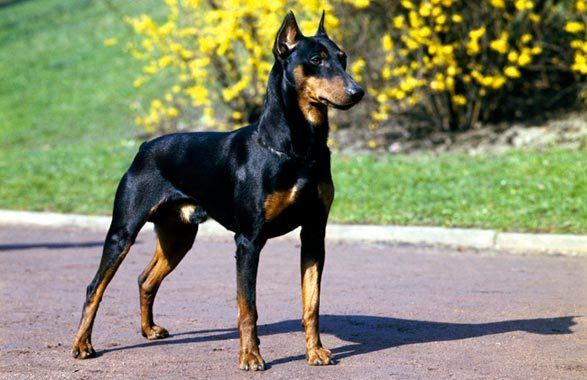

Es una raza relativamente reciente, este can requiere de una atención especial y tiende a proteger mucho a su dueño.Los machos tienen una altura de 68 a 72 cm y un peso de entre 40 a 45 kg, y las hembras una altura de 63-68 cm8 y un peso de 32 a 35 kg.

La fecha de hoy: .
Recuerda! Cuidar a un perro es igual de importante que cuidar a un ser humano.
Los canes tambien sienten.
Dejanos tu opinión, tu comentario importa
PASTOR CATALÁN
Adopta un hermoso Pastor Catalán
Puedes visitarnos y conocer a este can a partir del .
Este can es una raza de perro propia de Cataluña.Es un típico perro de pastor: fiel, cariñoso, amable, obediente, resistente, ladrador y reservado. De 47 a 55 cm en los machos y de 45 a 53 cm en las hembras.
La fecha de hoy: .
Recuerda! Cuidar a un perro es igual de importante que cuidar a un ser humano.
Los canes tambien sienten.
Dejanos tu opinión, tu comentario importa
TERRIER AUSTRALIANO
Adopta a este Terrier Australiano hoy, qué esperas!!!
La visita a este hermoso perro es a partir de este .
Su aspecto es muy parecido a de un Yorkshire terrier, Su manto de pelo es de color azulado y leonado de textura suave, liso y largo. Requiere cepillado y mantenimiento constante.Debe medir aproximadamente de 23 a 25 cm a la cruz y debe pesar entre 3.6 y 8 kilos, aunque las medidas pueden variar entre las diferentes federaciones.
La fecha de hoy: .
Recuerda! Cuidar a un perro es igual de importante que cuidar a un ser humano.